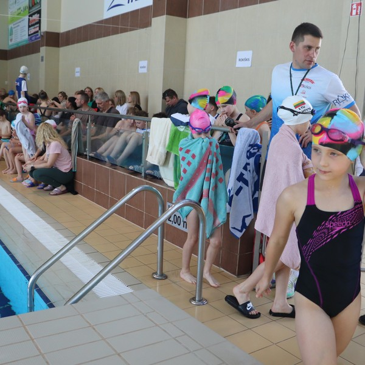

Individualios treniruotės vaikams
Individualios treniruotės – tai puiki galimybė vaikams mokytis plaukti saugioje, individualiai pritaikytoje aplinkoje. Šios pamokos tinka tiek pradedantiesiems, tiek pažengusiems.
-
Trukmė – 45–60 min.
Treniruotės vyksta pagal vaiko tempą
Padeda įveikti baimes ir sustiprinti pasitikėjimą vandenyje
Tinka vaikams nuo 3 metų
Naudojami žaismingi ir edukaciniai metodai
Pritaikoma specialiems poreikiams (sensoriniai iššūkiai, koordinacijos lavinimas)
